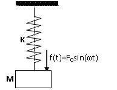
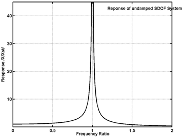
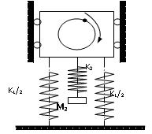
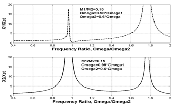
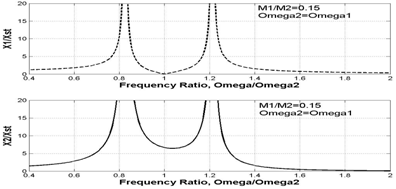
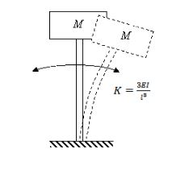
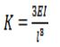
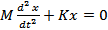
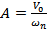

Tuned Vibration Absorber
Theory
Many–a-times, a vibratory system under forced vibration is required to run near resonance i.e. the excitation frequency is close to the natural frequency of the system. Under such a situation, the response of the system can be large and we must try to reduce it by taking some measure. The excitation frequency may be constant in many cases as in case of a machine with rotor-unbalance running at constant speed. By attaching a separate smaller spring-mass system, an auxiliary system, to the main system the vibration of the main system can be reduced, drastically, if the mass and the stiffness of the auxiliary system are properly calculated, i.e. if the auxiliarysystem is tuned to the natural frequency of the main system and the excitation frequency. Underthis condition,thevibrationof the main system is reduced almost to zero and the auxiliary system vibrates in response to the excitation. So, it is termed as vibration absorber and this method of vibration control is called vibration absorption.
In this experiment, you will try to design a tuned vibration absorber. You will also study the effect of changing the mass and stiffness of an auxiliary system (i.e. natural frequency of an auxiliary system when it is isolated) on response of the main system to a harmonic force. The harmonic force is considered to be generated out of unbalanced rotating mass with constant rpm. The mass and stiffness of main system are considered to be fixed which is usually the case in practical situation also. The frequency of theexcitation force and natural frequency of main system are close to each other. Thus, we have a main system with fixed natural frequency and a harmonic excitation force having frequency closer to the natural frequency of the main system. In other words, we have a system running at or near resonance having a large response, naturally, which will be reduced by attaching a properly tuned vibration absorber. Damping is neglected for simplicity and ease of understanding.
Follow the procedure given on another screen which is opened by clicking the tab 'Procedure' and use the simulator later to perform the experiment.
Theory
The theory on which thedesign of tuned vibration absorber is based is as given below:
The response of a SDOF system, subjected to a harmonic force having frequency close to the natural frequency of the system, will be quite large when the frequencies are equal. It will be infinite, theoretically, if damping is neglected. The variation of amplitude of response with respect to the excitation frequency is as shown in the graph below.
|  |  |
| Undamped SDOF system with harmonic force excitationResponse of undamped SDOF system to harmonic force; Magnitude of response v/s frequency of excitation, ω/ωn |
For an undamped SDOF system , the forced response is given by
where, Xst is the static deflection of the spring which is equal to the ratio of amplitude of the excitation force, F0,and the stiffness of the spring, K. ω - Excitation frequency, ωn - Naturalfrequency of the system. At ω = 0.95ωn, we get X/Xst = 10.26. The plot of the amplitude of response, X/Xst , versus frequency ratio, ω/ωn, is shown in the figure above. Now, we attach an auxiliary SDOF system with mass M2 and stiffness K2 to the main system which has a mass M1 and stiffness K1. When these systems were independent (separate), they would have their own natural frequencies given by ωn1 = (K1/M1)^0.5 for the main system, and ωn2 = (K1/M2)^0.5 for the auxiliary system It is to be noted that on attaching the auxiliary system to main system, another system is formed which is now a two degree of freedom system. It will have its own two natural frequencies but quite different from ω1 and ω2 that we considered above. The response of each mass of the system, now a 2-DOF system, to harmonic force acting on M1 (Amplitude of vibration of each mass is given by), is given by
μ is the mass ratio = M2/M1. ωn1 = (K1/M1)^0.5 and ωn2 = (K1/M2)^0.5, However, the natural frequencies of the 2-degree of freedom system formed after attaching the auxiliary system are given by different expressions in terms of M1, M2, K1, and K2. Plot of the dimensionless responses of each of the two masses is shown above when a harmonic force acts on M1 when excitation frequency is close to natural frequency of main system,ω ≠ω1 ,, but much away from natural frequency of auxiliary system,ω ≠ω2, Mass ratio μ=M2/M1= 0.15.
|  |  |
| ]-->Main system attached with an auxiliary system – Now, a 2-DOF system | Frequency response of each of the two masses when a harmonic force acts on M1 when excitation frequency is close to natural frequency of main system ω ]-->≈ ω1 but much away from natural frequency of auxiliary system, ω ≈ ω2. Mass ratio μ=M2/M1= 0.15. |
Now we consider that excitation frequency is almost equal to the natural frequency of the main system alone. Because of this, its response would be large before attaching the auxiliary system. If we attach the auxiliary system such that its natural frequency is equal to the excitation frequency, and hence also equal to that of the main system, and substitute ω =ω1 =ω2 in above equations, we find that X1 reduces to zero and X2 = F0/(μ.K1), XST = F0/K1. Thus, by attaching an auxiliary system with natural frequency equal to the excitation frequency and natural frequency of the main system makes the response of the main system zero though the auxiliary system oscillates with anamplitude equal to F0/(μ.K1).And this is the principle of working of a vibration absorber. While designing the vibration absorber, we must select K2 and M2 such that ω=ω2 = (K2/M2)^0.5 and to keep response of auxiliary system minimum, we must have X2 = F0/(μ.K1) minimum. As F0 and K1 cannot be changed, adjusting the mass ratio =M2/M1(in fact, only M2) is in our hand. For smaller X2, we should have large M2 and we cannot increase M2 to a very large extent because the auxiliary system should not be bulky. So, a compromise is made and value of μ is kept in the range of 0.05 to 0.25. Observe this in the figure below
In this experiment, while the auxiliary system is tuned, you would choose different values of mass ratio and observe the responses of the primary and secondary systems. The responses can also be observed even if the auxiliary system is not tuned i.e. when the natural frequency of auxiliary system is not equal to the excitation frequency or the natural frequency of the main system. This is done by choosing values of M2 and K2 such that ω ≠ ω2 as ω2 = (K2/M2)^0.5.
Vibratory systems around us
Here are some examples of physical systems where the vibrations are prominent and can be observed easily. In musical instruments the vibrations are intentional. The parts of musical instruments are designed so that they generate sounds that are pleasant to listen. In many cases the vibrations are unwanted and we try to minimize them.
A chandelier hanging from ceiling oscillates to and fro following an initial disturbance; maybe due to a breeze of air.
The oscillations of the chandelier at cathedral of Pisa, Italy, were studied by the famous scientist Galileo Galilee.
A load attached at end of a wire-rope of a crane oscillates to and fro due to initial disturbance; maybe due to sudden stopping of carriage of the crane while revolving about the vertical axis.
The pendulum used in clock of olden days used to oscillate to and fro once every second. i.e. it had a period of oscillation of one second.
String of a guitar, when plucked and left to its own, vibrates and makes a musical sound. It comes to rest after a while; the vibrations die out. Similarly, the diaphragm of a table vibrates when hit and left to its own. It also comes to rest after some time.
All these are examples of vibratory systems that are set into vibration following an initial disturbance. All these systems have three components: mass, due to which the system possesses inertia; elasticity, due to which potential energy can be stored; and components that dissipate energy causing the vibratory motion to be damped which bring them to rest after some time.
Vibration or vibratory systems are classified in number of ways. Some of the classifications are given below:
Free and forced vibration - A free vibration occurs due to initial displacement or velocity, or both, applied to the system only initially. There is no external force acting on the system when the system is vibrating. A forced vibration occurs when the system vibrates in response to external force applied continuously. When the force applied is periodic, i.e. it repeats itself after a fixed interval of time, the forced vibration is called periodic. If the periodic force and hence the resulting vibration varies sinusoidally with respect to time, the vibration is called harmonic. If the force is not periodic, the forced vibration is called aperiodic or random.
Damped and undamped vibration - When the vibratory system has elements that offer resistance to motion, energy is continuously dissipated and the free vibrations of such systems come to halt after some time. This is called damped vibration and such systems are called damped systems. Forced vibration of a damped system continues as long as the force acts but some of the work done by the external force is lost in overcoming the resistance offered by the damping elements. Systems without damping elements are called undamped systems and their vibrations are called undamped vibrations. All systems in nature have some or the other damping element and their natural vibrations are damped. Hence they come to rest after some time following free vibrations. Nevertheless, we study the vibration of undamped systems because the concepts developed in studying them are useful in analyzing and understanding the phenomena occurring in vibration of damped as well as complicated systems. When the force of resistance offered by a damping element is proportional to velocity of mass of the system, it is termed as viscous damping and the damping element is called a viscous damper. If the force of resistance has a constant value, it is termed as Coulomb damping. Damping due to dry friction shows this kind of behavior. Coulomb damping can occur when the system has components rubbing over each other. There are other types of damping also which shall be discussed later.
Degrees of freedom : The vibratory systems are classified as single-degree-of-freedom systems, Multi-degree-of-freedom-systems or continuous systems. The number of degrees of freedom corresponds to the number of independent co-ordinates required to completely describe the motion of the system. In fact, it is the sum of the possible ways each mass can move independently of other masses. The translation of a mass along the three axes, X, Y and Z, and the three rotations about each of these axes constitute possible ways of motion of a mass. Many times, many of these six motions of a mass are restricted and a mass can have one or two degrees of freedom, i.e. only translation or translation and rotation of a single mass about any one of the axes.
Linear and Non-linear Vibrations : Vibration is said to be linear if the damping force is proportional to velocity, inertia force is proportional to mass, and restoring force is proportional to displacement. If any of this proportionality is not satisfied, the system is said to be non-linear.
Solving engineering problems : Analytical methods are usually applied to models of actual systems. We carry out experiments on models if physical systems are not available for testing. While preparing such models, we exclude superfluous details of the system but include all essential and important features of the actual system. While doing so, we idealize and approximate important behaviour of the system without affecting much the accuracy in predicting the behaviour. The system model so developed provides ease of application of analytical and experimental techniques. Once a satisfactory model is developed, laws of Physics can be applied which give a set of mathematical equations relating the properties and variables of the system. Such a set of mathematical equations is called mathematical model of the system. Solving the set of equations (or a single mathematical equation) provides expression for the system variable in terms of location and time. We call this as 'solution' of the problem. As an illustration of the concepts described above, see the example given below.
| Physical system | These days we have number of towering buildings. Many a times the residential part of such a building is supported on a tall concrete structure. One of such buildings is the 'Milad Tower', situated in Tehran, Iran. Its head consists of a large pod with 12 floors and below is a staircase and elevators to reach the area.
The oscillations of such tall buildings, in response to earthquake and wind, are important from design point of view. And to study these oscillations, we must know the characteristics of its natural vibration. Analysis of such a physical system can be very much complicated. To obtain first rough estimate of the natural frequency of vibration, the problem can be stated and the physical system can be modeled in a simple way as described below. |
|
| Problem statement | To find natural frequency of oscillation of the tower in the direction perpendicular to the vertical axis (i.e. natural frequency of transverse oscillation of the tower) and position of the head at any given time. | |
| Physical model of the system |  | The physical model for the system under consideration can be as shown in This is the simplest model. Only the mass of the building at the top is considered and it is considered to be concentrated at one point. The mass of the vertical pillar supporting the buiding is neglected and is considered to be a cantilever offering only elesticity.
Thus it becomes a single degree of freedom system with single mass and only one way of motion of the mass: translation in direction perpendicular to the vertical axis of the building. Further we assume that the amplitude of this motion to be small. The equivalent stiffness of the cantilever is given by  |
Mathematical model
Using Newton's second law of motion, the equation of motion of the mass is written as
The first term is the inertia force which is equal to mass multiplied by acceleration and the second term is the spring force given by stiffness of the spring multiplied by its elongation or compression.
The differential equation is a mathematical model of the system.
General Solution
The solution to the above differential equation is given by
A and B are constants that depend the initial conditions, i.e. the displacement and velocity of the mass when we started measuring our time.
These are known as initial conditions.
 is the natural frequency in radians per second and is given by
is the natural frequency in radians per second and is given by
Particular solution obtained from the initial conditions
Substituting the initial conditions in above expression, we can obtain the values of A and B. Thus if X0 and V0 are the initial displacement and velocity, respectively, given to the mass, the above expression will yield values of A and B as  and
Now the expression for x becomes

And we can obtain the value of x at any time t from this expression.
Thus we have obtained the expressions for natural frequency and position of the head at any given time 't' and the problem stated by the problem statement is solved.